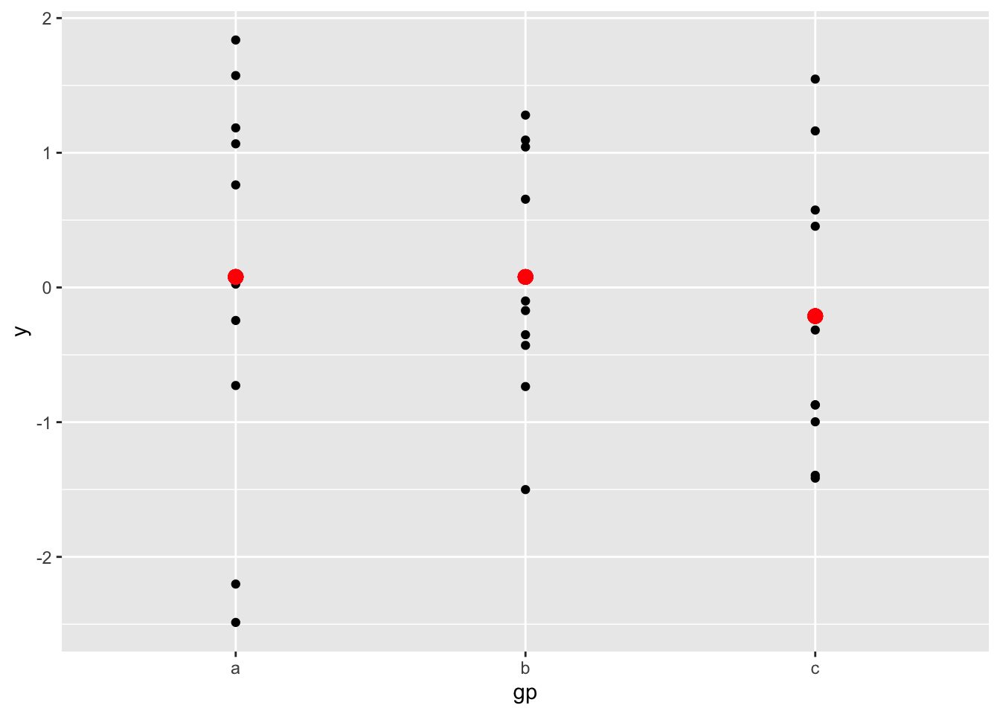

Chapter 7 San Francisco Bay Area Shop / Other Mode Choice
## ── Attaching packages ───────────────────────────────────────────────────────────────────────────────────────── tidyverse 1.3.0 ──## ✓ ggplot2 3.3.2.9000 ✓ purrr 0.3.4
## ✓ tibble 3.0.3 ✓ dplyr 1.0.2
## ✓ tidyr 1.1.2 ✓ stringr 1.4.0
## ✓ readr 1.3.1 ✓ forcats 0.5.0## Warning: package 'tibble' was built under R version 4.0.2## Warning: package 'tidyr' was built under R version 4.0.2## Warning: package 'dplyr' was built under R version 4.0.2## ── Conflicts ──────────────────────────────────────────────────────────────────────────────────────────── tidyverse_conflicts() ──
## x dplyr::filter() masks stats::filter()
## x dplyr::lag() masks stats::lag()## Warning: package 'haven' was built under R version 4.0.2## Loading required package: dfidx##
## Attaching package: 'dfidx'## The following object is masked from 'package:stats':
##
## filter7.1 Introduction
models <- list()
models[['Bivariate']] <- lm(Girth ~ Height, data = trees)
models[['Multivariate']] <- lm(Girth ~ Height + Volume, data = trees)| Bivariate | Multivariate | |
|---|---|---|
| (Intercept) | -6.188 | 10.816 |
| (5.960) | (1.973) | |
| Height | 0.256 | -0.045 |
| (0.078) | (0.028) | |
| Volume | 0.195 | |
| (0.011) | ||
| Num.Obs. | 31 | 31 |
| R2 | 0.270 | 0.941 |
| R2 Adj. | 0.244 | 0.937 |
| AIC | 154.1 | 78.2 |
| BIC | 158.4 | 84.0 |
| Log.Lik. | -74.061 | -35.116 |
| F | 10.707 | 222.471 |
Table 7.1 shows the estimated models. Figure 7.1 shows the grouped mean for three groups.
# Generate some sample data, then compute mean and standard deviation
# in each group
df <- data.frame(
gp = factor(rep(letters[1:3], each = 10)),
y = rnorm(30)
)
ds <- do.call(rbind, lapply(split(df, df$gp), function(d) {
data.frame(mean = mean(d$y), sd = sd(d$y), gp = d$gp)
}))# The summary data frame ds is used to plot larger red points on top
# of the raw data. Note that we don't need to supply `data` or `mapping`
# in each layer because the defaults from ggplot() are used.
ggplot(df, aes(gp, y)) +
geom_point() +
geom_point(data = ds, aes(y = mean), colour = 'red', size = 3)

Figure 7.1: Grouped means.